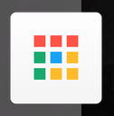
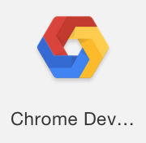
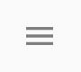
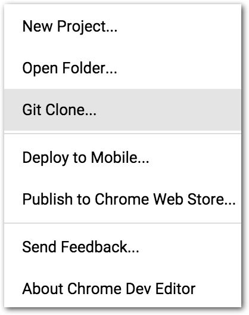
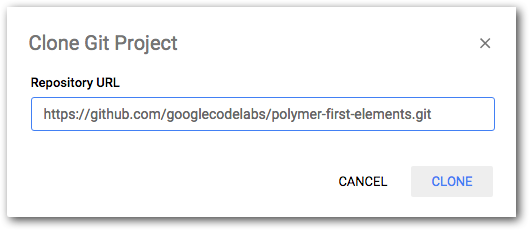

In this codelab, you'll learn how to build elements using Polymer 1.0. You'll create a simple Polymer element, a toggle button. The finished button will look something like this:

You'll be able to use it with simple markup like this:
<icon-toggle></icon-toggle>This project introduces you to most of the key concepts in working with Polymer.
Don't worry if you don't understand everything. Each of the concepts presented here is described in detail in the Polymer documentation.
- Basic understanding of HTML, CSS, and web development.
- Chrome Dev Editor.
- The sample code.
You'll download Chrome Dev Editor and the sample code in the next step.
If you want to use another text editor instead of Chrome Dev Editor, you'll need to download some command-line tools. See the repo for details.
How would you rate your experience with Polymer?
While you're free to use your own editor, this codelab will probably be easier to follow if you use the Chrome Dev Editor, a Chrome app IDE. If you don't have it installed yet, you can install it from the Chrome Web Store.
After installing the Chrome Dev Editor, use it to clone a Git repo.
Start the Chrome Dev Editor
- Open the Chrome App Launcher: 
- In the Chrome App Launcher window, click on the Chrome Dev Editor icon: 
- In Chrome Dev Editor, click the menu icon , then select Git Clone...

- Enter this URL for the repo associated with this codelab:
https://github.com/googlecodelabs/polymer-first-elements.git

- Click Clone.
Note: If this is your first Chrome Dev Editor project, you may be asked to choose a folder to save projects to. You can accept the default and proceed or create and select a new directory.
Chrome Dev Editor uses Bower to download and install a list of dependencies (including Polymer) into the bower_components/ folder.
Fetching the components may take some time if your internet connection is slow.
When the installation finishes, your project folder should look something like this:

The main file you'll work with is icon-toggle.html, which contains the definition for your custom element.
Run the demo
To run the element demo:
- Right-click or CTRL+click on the
demofolder and choose Run. (On Chrome OS, two-finger tap or ALT+click.)
Chrome Dev Editor opens the demo in a new browser tab. You'll see some text where the icon toggles should appear. It doesn't look very interesting, but it shows everything is working.

Next, you'll create a simple element that displays an icon.
In this step, you'll learn about:
- Creating a custom element using Polymer.
- Working with local DOM.
Edit icon-toggle.html
Click on icon-toggle.html in the root of the Chrome Dev Editor navigation panel. This file contains the skeleton of a custom element.
Unlike most HTML files, this file won't display anything if you load it in a browser—it just defines a new element. The demo you just ran imports icon-toggle.html so it can use the <icon-toggle> element. As you add features to the element in the following steps, they'll show up in the demo.
Start by taking a look at the existing code:
Starting code—HTML imports
<link rel="import"
href="../polymer/polymer.html">
<link rel="import"
href="../iron-icon/iron-icon.html">Key information:
- The
link rel="import"element is an HTML import, a new way of including resources in an HTML file. - These lines import the Polymer library and another custom element called
iron-iconthat you'll use later in this step.
Next is the definition of the element itself:
Starting code—local DOM template
<dom-module id="icon-toggle">
<template>
<style>
/* local styles go here */
:host {
display: inline-block;
}
</style>
<!-- local DOM goes here -->
<span>Not much here yet.</span>
</template>
Key information:
- The
<dom-module>tag is an optional part of the element definition. It defines the element's internal DOM structure, or local DOM as well as the element's local styling. In this case, you're creating an element calledicon-toggle. - The
<template>defines the element's local DOM structure. This is where you'll add markup for your custom element. - The
<style>element inside the<template>lets you define styles that are scoped to the local DOM, so they don't affect the rest of the document. - The
:hostpseudo-class matches the custom element you're defining (in this case, the<icon-toggle>). This is the element that contains or hosts the local DOM tree.
At the end of the element definition is some JavaScript that registers the element. If the element has a <dom-module>, this script is usually placed inside the <dom-module> to keep everything together.
Starting code—element registration
<script>
Polymer({
/* this is the element's prototype */
is: 'icon-toggle'
});
</script>
</dom-module>Key information:
- The
Polymercall registers the element so it's recognized by the browser. - The argument to the Polymer call is the new element's prototype. You'll do more with this in a later step.
- The
isproperty on the prototype is the new element's name. It has to match theidon the<dom-module>that contains the element's template.
Create the local DOM structure
Now that you're familiar with the basic layout of the element, add something useful to its local DOM template.
Find the <span> below the local DOM goes here comment:
icon-toggle.html—before
<!-- local DOM goes here -->
<span>Not much here yet.</span>
</template>
Replace the <span> and its contents with the <iron-icon> tag below:
icon-toggle.html—after
<!-- local DOM goes here -->
<iron-icon icon="polymer">
</iron-icon>
</template>Key information:
- The
<iron-icon>element is a custom element that renders an icon. Here it's hard-coded to use an icon named "polymer".
Style the local DOM
There are a number of new CSS selectors to work with local DOM. The icon-toggle.html file already includes a :host selector, discussed earlier, to style the top-level <icon-toggle> element.
To style the <iron-icon> element, add the following CSS inside the <style> tag after the existing content:
icon-toggle.html
<style>
/* local styles go here */
:host {
display: inline-block;
}
iron-icon {
fill: rgba(0,0,0,0);
stroke: currentcolor;
}
:host([pressed]) iron-icon {
fill: currentcolor;
}
</style>Key information:
- The
<iron-icon>tag uses an SVG icon. Thefillandstrokeproperties are SVG-specific CSS properties. They set the fill color and the outline color for the icon, respectively. - The
:host()function matches the host element if the selector inside the parentheses matches the host element. In this case,[pressed]is a standard CSS attribute selector, so this rule matches when theicon-togglehas apressedattribute set on it.
Your custom element definition should now look like this:
icon-toggle.html
<link rel="import" href="../polymer/polymer.html">
<link rel="import" href="../iron-icon/iron-icon.html">
<dom-module id="icon-toggle">
<template>
<style>
/* local styles go here */
:host {
display: inline-block;
}
iron-icon {
fill: rgba(0,0,0,0);
stroke: currentcolor;
}
:host([pressed]) iron-icon {
fill: currentcolor;
}
</style>
<!-- local DOM goes here -->
<iron-icon icon="polymer">
</iron-icon>
</template>
<script>
Polymer({
is: 'icon-toggle',
});
</script>
</dom-module>Reload the demo, or re-run it by right-clicking on the demo folder and selecting Run. You should see the toggle buttons show up with the hard-coded icon.

You'll notice that one toggle is styled as pressed, because the pressed attribute is set in the demo. But click all you want, the button won't toggle yet; there's no code to change the pressed property.
Right now, the element doesn't do much. In this step, you'll give it a basic API, allowing you to configure the icon from markup, using an attribute, or from JavaScript, using a property.
First, a bit of data binding. Find the <iron-icon> element and change the value of the icon attribute from "polymer" to "[[toggleIcon]]".
icon-toggle.html
<!-- local DOM goes here -->
<iron-icon icon="[[toggleIcon]]">
</iron-icon>Key information:
toggleIconis a property you'll define on the toggle button element. It doesn't have a default value yet.- The
icon="[[toggleIcon]]"assignment is a data binding. It links your element'stoggleIconproperty with the<iron-icon>'siconproperty.
You could now use your element and set the toggleIcon property in markup or using JavaScript, as shown in the following examples. (You don't need to add this code to your project.)
Example—setting the icon using markup
<icon-toggle toggle-icon="favorite"></icon-toggle>Example—setting the icon from JavaScript
var myToggle = document.querySelector('icon-toggle');
myToggle.toggleIcon = "favorite";Next, add a declaration for the toggleIcon property.
Find the script tag and add the following properties object to the element's prototype:
icon-toggle.html
<script>
Polymer({
/* this is the element's prototype */
is: 'icon-toggle',
properties: {
toggleIcon: String
}
});
</script>
</dom-module>Key information:
- Declaring a property in the
propertiesobject is a good idea if the property is going to be part of your element's public API. - A simple property declaration like this one just includes the type (in this case,
String).
The properties object also supports several more features. Add the following lines to add support for the pressed property:
icon-toggle.html
Polymer({
/* this is the element's prototype */
is: 'icon-toggle',
properties: {
toggleIcon: String,
pressed: {
type: Boolean,
value: false,
notify: true,
reflectToAttribute: true
}
}
});Key information:
- For this more complicated property, you supply a configuration object with several fields.
- The
valuespecifies the property's default value. - The
notifyproperty tells Polymer to generate property change events when the property value changes. This lets the change be observed by other nodes. - The
reflectToAttributeproperty tells Polymer to update the corresponding attribute when the property changes. This lets you style the element using an attribute selector, likeicon-toggle[pressed].
Now your element has pressed and toggleIcon properties working.
Reload the demo, and you should see star and heart icons instead of the hard-coded icon from the previous step:

If you're curious about where the stars and hearts come from, you can take a peek at demo/icon-toggle-demo.html and see lines like this:
<icon-toggle toggle-icon="star"></icon-toggle>
<icon-toggle toggle-icon="star" pressed></icon-toggle>Of course, a button isn't a button if you can't click it. To toggle the button, add an event listener. To add event listeners on the host element (in this case, icon-toggle), add a listeners object to the element prototype:
icon-toggle.html
Polymer({
/* this is the element's prototype */
is: 'icon-toggle',
properties: {
toggleIcon: String,
pressed: {
type: Boolean,
value: false,
notify: true,
reflectToAttribute: true
}
},
listeners: {
'tap': 'toggle'
},
toggle: function() {
this.pressed = !this.pressed;
},
});Key information:
- The
listenersobject maps event names to handler names. - The
tapevent is generated by Polymer's gesture system when the user clicks or taps on a target with a mouse or finger.
Save the icon-toggle.html file and run the demo again. You should be able to press the button and see it toggle between its pressed and unpressed states.

You now have a button that's basically functional. But it's stuck using the existing text color for both pressed and unpressed states. What if you want to get a little flashier?
Local DOM helps prevent users from styling your element's internals by accident. Using custom properties, your element can expose a specific set of user-styleable properties.
You apply a custom property inside your element using the `var` function.
background-color: var(--my-custom-property, defaultValue);Where --my-custom-property is a custom property name, always starting with two dashes (--), and defaultValue is an (optional) CSS value that's used if the custom property isn't set.
Edit your element's <style> tag and replace the existing fill and stroke values with custom properties:
icon-toggle.html
<style>
/* local styles go here */
:host {
display: inline-block;
}
iron-icon {
fill: var(--icon-toggle-color, rgba(0,0,0,0));
stroke: var(--icon-toggle-outline-color, currentcolor);
}
:host([pressed]) iron-icon {
fill: var(--icon-toggle-pressed-color, currentcolor);
}
</style>Because of the default values, you can still style the <icon-toggle> just by setting color, but now you have other options. Open up demo/icon-toggle-demo.html and set the new properties:
icon-toggle-demo.html
<style>
:host {
font-family: sans-serif;
--icon-toggle-color: lightgrey;
--icon-toggle-outline-color: black;
--icon-toggle-pressed-color: red;
};
</style>Run the demo again to get colorful.

That's it — you're finished. You've created an element that has a basic UI, API, and custom styling properties.
If you have any trouble getting the element working, check out the finished version.